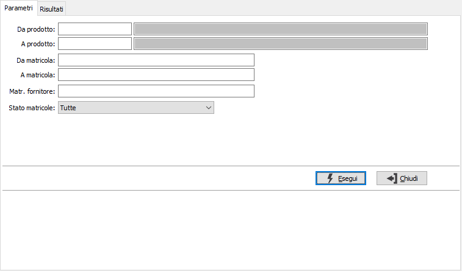
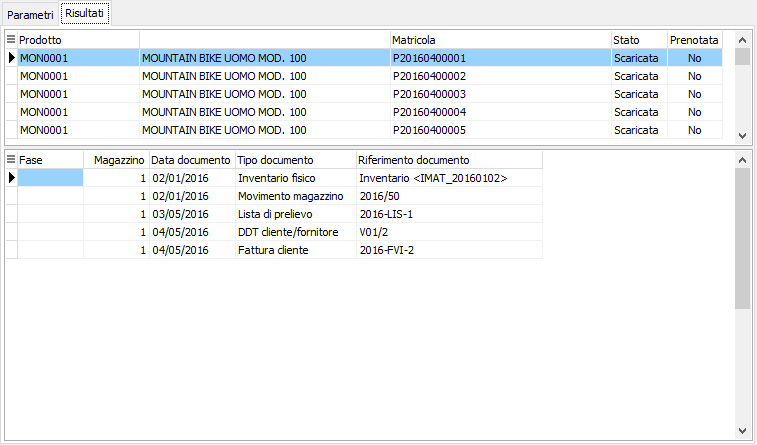

Analisi movimenti matricole
La procedura consente di analizzare la movimentazione per ogni prodotto/matricola; è possibile visualizzare i movimenti relativi ad uno o più prodotti, o matricole, è possibile utilizzare la matricola del fornitore come filtro per la movimentazione ed inoltre si può specificare un singolo stato per limitare le matricole da visualizzare (create, in carico, scaricate o tutte).
Il programma si articola su due finestre video. La prima, Parametri, consente la definizione dei parametri di analisi.

Confermando tramite pressione del bottone Esegui, viene avviata la selezione e richiamata la finestra video Risultati. Vengono visualizzate due griglie, una per i prodotti/matricola dove viene riportato lo stato e l'eventuale prenotazione; l'altra per il dettaglio dei movimenti, da questa griglia è possibile, col doppio clic sul singolo movimento, richiamare la relativa finestra di manutenzione.
Utilizzando i tasti funzione della toolbar (anteprima di stampa o stampa), si avviano le relative funzioni.
